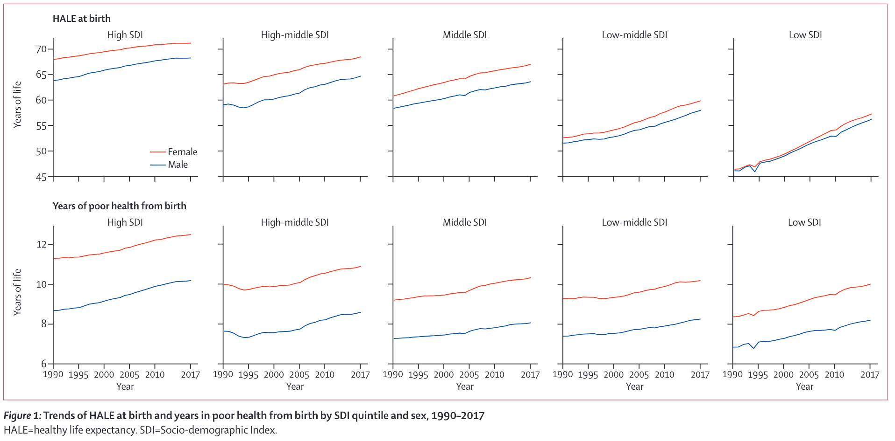

When your ‘golden years’ are not so golden
Peter Kamerman
25 January 2019Background
A recent article in The Lancet1 reported that the increase in life expectancy that has occurred over the past 28 years (1990 to 2017) is associated with a disproportionate relative increase in time spent in poor health compared to good health. The authors reached this conclusion after analysing data on total life expectancy and healthy life expectancy (HALE; years of good health) from the Global Burden of Diseases, Injuries, and Risk Factors Study 2017 (GBD 2017). The GBD Study, assesses mortality and disability based on 359 causes of death and disability across 195 countries and territories (GBD data are freely available for download from the Global Burden of Disease Exchange).
The figure below is taken directly from the article in The Lancet and shows years of good health and years of poor health (total life expectancy - years of good health) for females (red lines) and males (blue lines) across socio-demographic index quintiles (High SDI, High-middle SDI, Middle SDI, Middle-low SDI, Low SDI).

The figure shows an upward trend in years of good health and years of poor health over the past 28 years, for males and females across the five socio-demographic quintiles. But, it is hard to discern from the plot whether the rate of increase in years of poor health is greater than the rate of increase in years of good health, even though this was a key finding of the research. That is, the figure does not accomplish the reason for having a plot, which is to provide a visual aid for interpreting the findings.
So I decided to play with the data myself to see if I could generate more informative plots.
I approached this task by:
Recapitulating the plot from the article, but with an extra panel showing total life expectancy. I decided on this plot because I wanted to confirm that I had downloaded the correct data, and I felt that the total life expectancy panel would help contextualize changes in years of good health and years of poor health data; and by
Comparing the cumulative year-over-year percent change in years of poor health and years of good health since 1990. I felt that using the cumulative year-over-year change would allow direct comparison of the long-term trends of two variables measured on the same scale (years), but which have vastly different magnitudes (years of good health contributes 80 to 90% of total life expectancy). As an bonus, I decided to animate these plots to get a feel for the new
gganimateAPI.
Download, import, and clean data
First I had to get and clean the data.
I manually downloaded the data from the Global Burden of Disease Exchange website using their query tool (as far as I know, the site does not have an API to remotely query and retrieve data). I then imported the two *.csv files I had downloaded (one for years of good health, and one for total life expectancy), and performed a cursory inspection and a basic clean-up of the data, the code and outputs of which are shown below.
############################################################
# #
# Import data #
# #
############################################################
# years of good health
hale <- read_csv('_data/2019-01-25-global-burden-of-disease/hale-1990-2017.csv')
# Life expectancy
life <- read_csv('_data/2019-01-25-global-burden-of-disease/life-expectancy-1990-2017.csv')
############################################################
# #
# Inspect data #
# #
############################################################
skim(hale)## Skim summary statistics
## n obs: 280
## n variables: 9
##
## ── Variable type:character ─────────────────────────────────────────────────────────────────
## variable missing complete n min max empty n_unique
## age 0 280 280 7 7 0 1
## location 0 280 280 7 15 0 5
## measure 0 280 280 30 30 0 1
## metric 0 280 280 5 5 0 1
## sex 0 280 280 4 6 0 2
##
## ── Variable type:numeric ───────────────────────────────────────────────────────────────────
## variable missing n mean sd p25 p50 p75 hist
## lower 0 280 57.48 6.44 51.94 58.66 62.78 ▃▃▇▅▆▇▇▆
## upper 0 280 62.29 6.91 56.46 62.82 67.82 ▃▃▆▅▆▇▇▅
## val 0 280 60.04 6.72 54.15 60.85 65.5 ▃▃▆▅▆▇▇▅
## year 0 280 2003.5 8.09 1996.75 2003.5 2010.25 ▇▆▇▆▆▇▆▇## Skim summary statistics
## n obs: 280
## n variables: 9
##
## ── Variable type:character ─────────────────────────────────────────────────────────────────
## variable missing complete n min max empty n_unique
## age 0 280 280 7 7 0 1
## location 0 280 280 7 15 0 5
## measure 0 280 280 15 15 0 1
## metric 0 280 280 5 5 0 1
## sex 0 280 280 4 6 0 2
##
## ── Variable type:numeric ───────────────────────────────────────────────────────────────────
## variable missing n mean sd p25 p50 p75 hist
## lower 0 280 68.88 7.87 62.6 68.93 75.15 ▃▅▇▇▇▇▆▅
## upper 0 280 69.45 7.58 63.38 69.59 75.46 ▂▅▆▇▆▇▆▃
## val 0 280 69.17 7.72 62.98 69.18 75.33 ▃▅▆▇▆▇▆▃
## year 0 280 2003.5 8.09 1996.75 2003.5 2010.25 ▇▆▇▆▆▇▆▇############################################################
# #
# Clean data #
# #
############################################################
data <- life %>%
# Join imported datasets
bind_rows(hale) %>%
# Select required columns
select(measure, location, sex, year, metric, val) %>%
# Recode measure category labels
mutate(measure = str_replace_all(measure,
pattern = 'HALE \\(Healthy life expectancy\\)',
replacement = 'Years of good health')) %>%
mutate(measure = str_replace_all(measure,
pattern = 'Life expectancy',
replacement = 'Total life expectancy')) %>%
# Order location variable (socio-demographic quintile)
mutate(location = factor(location,
levels = c('High SDI', 'High-middle SDI',
'Middle SDI', 'Low-middle SDI',
'Low SDI'),
ordered = TRUE))
# Inspect cleaned data
glimpse(data)## Observations: 560
## Variables: 6
## $ measure <chr> "Total life expectancy", "Total life expectancy", "Tota…
## $ location <ord> High-middle SDI, High-middle SDI, High SDI, High SDI, L…
## $ sex <chr> "Male", "Female", "Male", "Female", "Male", "Female", "…
## $ year <dbl> 2015, 2015, 2015, 2015, 2015, 2015, 2015, 2015, 2016, 2…
## $ metric <chr> "Years", "Years", "Years", "Years", "Years", "Years", "…
## $ val <dbl> 72.65688, 78.81469, 78.39470, 83.60049, 65.61743, 69.43…The data looked in good order, and only needed some minor cleaning.
Analysis
Step 1
Recapitulate the plot from the article, but with an extra panel showing total life expectancy.
I used the cleaned data to calculate the years of poor health2, and then generated separate plots for total life expectancy, years of good health, and years of poor health. For each plot, I presented the data by sex and socio-demographic index quintile.
Finally, I pieced the individual plots together and formated the visual look using html/css (after bumping my head repeatedly against a brick wall trying to get the desired look using the patchwork and cowplot packages; my usual go to packages for multiplots).
############################################################
# #
# Calculate years of poor health since birth #
# #
############################################################
delta <- data %>%
# Spread the measure column
spread(key = measure,
value = val) %>%
# Calculate years unhealthy
mutate(`Years of poor health` = `Total life expectancy` - `Years of good health`) %>%
# Gather measures again
gather(key = measure,
value = val,
-location, -sex, -year, -metric)
############################################################
# #
# Plot #
# #
############################################################
# Generate separate plots for each 'measure', and save the outputs.
## Total life expectancy
le <- delta %>%
filter(measure == 'Total life expectancy') %>%
ggplot(data = .) +
aes(x = year,
y = val,
colour = sex) +
geom_line() +
scale_x_continuous(breaks = c(1990, 1995, 2000, 2005, 2010, 2017)) +
scale_y_continuous(breaks = c(50, 60, 70, 80),
limits = c(50, 85),
expand = c(0, 0)) +
scale_colour_manual(values = c('#ED0000', '#00468B')) +
labs(title = 'Total life expectancy at birth',
y = 'Years of life') +
facet_wrap(~ location,
ncol = 5) +
theme_bw(base_size = 12) +
theme(legend.title = element_blank(),
legend.position = c(0.99, 0.985),
legend.justification = c(0.99, 0.985),
legend.margin = margin(t = 0, r = 0, b = 0, l = 0, unit = 'lines'),
plot.title = element_text(size = 12, face = 'bold'),
axis.text.x = element_blank(),
axis.title.x = element_blank(),
panel.grid = element_blank(),
strip.background = element_blank())
ggsave(filename = 'le.png',
plot = le,
path = './images/posts/2019-01-25-global-burden-of-disease',
width = 8,
height = 2.2,
units = 'in')
## Years of good health
healthy <- delta %>%
filter(measure == 'Years of good health') %>%
ggplot(data = .) +
aes(x = year,
y = val,
colour = sex) +
geom_line() +
scale_x_continuous(breaks = c(1990, 1995, 2000, 2005, 2010, 2017)) +
scale_y_continuous(breaks = c(40, 50, 60, 70),
limits = c(40, 75),
expand = c(0, 0)) +
scale_colour_manual(values = c('#ED0000', '#00468B')) +
labs(title = 'Years of good health at birth',
y = 'Years of life') +
facet_wrap(~ location,
ncol = 5) +
theme_bw(base_size = 12) +
theme(legend.position = 'none',
axis.text.x = element_blank(),
axis.title.x = element_blank(),
plot.title = element_text(size = 12, face = 'bold'),
panel.grid = element_blank(),
strip.background = element_blank())
ggsave(filename = 'healthy.png',
plot = healthy,
path = './images/posts/2019-01-25-global-burden-of-disease',
width = 8,
height = 2.2,
units = 'in')
## Poor health
unhealthy <- delta %>%
filter(measure == 'Years of poor health') %>%
ggplot(data = .) +
aes(x = year,
y = val,
colour = sex) +
geom_line() +
scale_x_continuous(breaks = c(1990, 1995, 2000, 2005, 2010, 2017)) +
scale_y_continuous(breaks = c(6, 8, 10, 12),
limits = c(6, 13),
expand = c(0, 0)) +
scale_colour_manual(values = c('#ED0000', '#00468B')) +
labs(title = 'Years of poor health at birth',
x = 'Year',
y = 'Years of life') +
facet_wrap(~ location,
ncol = 5) +
theme_bw(base_size = 12) +
theme(legend.position = 'none',
plot.title = element_text(size = 12, face = 'bold'),
axis.text.x = element_text(angle = 45,
hjust = 1,
vjust = 1.1),
panel.grid = element_blank(),
strip.background = element_blank())
ggsave(filename = 'unhealthy.png',
plot = unhealthy,
path = './images/posts/2019-01-25-global-burden-of-disease',
width = 8,
height = 2.75,
units = 'in')


Revised figure 1: Trends of total life expectancy at birth, years of good health at birth, and years of poor health at birth by SDI quintile and sex, 1990-2017.
SDI=Socio-demographic index
Comparing my figure to the figure from the article, I was satisfied that I had reproduced the original figure (but with a total life expectancy panel). From Revised figure 1, it is clear that total life expectancy, years of good health, and years of poor health increased over time for both sexes, and across all socio-demographic quintiles. Although the trend curves for males and females are roughly parallel for all three measures (with the curves for females shifted upwards relative to those of their male counterparts), there is a progressive reduction in the magnitude of this male/female difference as you move from High SDI countries to Low SDI countries, particularly for total life expectancy and years of good health.
I feel that presenting total life expectancy data in the figure added value. For example, with the addition of total life expectancy data, it is apparent that in Low SDI countries, total life expectancy has consistently been slightly greater in females than in males, yet years of good health in males and females over the same time-period is almost identical. So, the marginally greater total life expectancy in females must reflect more years of poor health compared to males.
Step 2
Compare cumulative year-over-year percent change in years of poor health and years of good health for the past 28 years.
There were several ways I could have analysed and plotted these data. For example, I could have used: sequential year-over-year percent change data, mean-centered data, or the yearly absolute difference between years of good health and years of poor health. But I chose to use cumulative year-over-year percent change because I felt it was the best option for presenting the data. As a relative measure, it corrects for the very large absolute difference between years of good health and years of poor health (~ 38 to 57 years in 1990, depending on SDI quintile and sex), and allows the assessment of the cumulative effect the yearly fluctuations in years of good health and years of poor health.
############################################################
# #
# Plot animated versions of the total #
# life expectancy data for males and females #
# #
############################################################
# Males
le_male <- delta %>%
filter(sex == 'Male') %>%
filter(measure == 'Total life expectancy') %>%
ggplot(data = .) +
aes(x = year,
y = val) +
geom_line(colour = '#00468B') +
scale_x_continuous(breaks = c(1990, 1995, 2000, 2005, 2010, 2017)) +
scale_y_continuous(breaks = c(50, 60, 70, 80),
limits = c(50, 85),
expand = c(0, 0)) +
labs(title = 'Total life expectancy at birth',
y = 'Years of life') +
facet_wrap(~ location,
ncol = 5) +
theme_bw(base_size = 12) +
theme(legend.title = element_blank(),
legend.position = c(0.99, 0.985),
legend.justification = c(0.99, 0.985),
legend.margin = margin(t = 0, r = 0, b = 0, l = 0, unit = 'lines'),
plot.title = element_text(size = 12, face = 'bold'),
axis.text.x = element_blank(),
axis.title.x = element_blank(),
panel.grid = element_blank(),
strip.background = element_blank()) +
transition_reveal(year)
le_male <- animate(plot = le_male,
fps = 10,
nframes = 150,
duration = 15,
end_pause = 50,
res = 150,
width = 8,
height = 2.2,
units = 'in')
anim_save(filename = 'le_male.gif',
animation = le_male,
path = './images/posts/2019-01-25-global-burden-of-disease')
# Females
le_female <- delta %>%
filter(sex == 'Female') %>%
filter(measure == 'Total life expectancy') %>%
ggplot(data = .) +
aes(x = year,
y = val) +
geom_line(colour = '#ED0000') +
scale_x_continuous(breaks = c(1990, 1995, 2000, 2005, 2010, 2017)) +
scale_y_continuous(breaks = c(50, 60, 70, 80),
limits = c(50, 85),
expand = c(0, 0)) +
labs(title = 'Total life expectancy at birth',
y = 'Years of life') +
facet_wrap(~ location,
ncol = 5) +
theme_bw(base_size = 12) +
theme(legend.title = element_blank(),
legend.position = c(0.99, 0.985),
legend.justification = c(0.99, 0.985),
legend.margin = margin(t = 0, r = 0, b = 0, l = 0, unit = 'lines'),
plot.title = element_text(size = 12, face = 'bold'),
axis.text.x = element_blank(),
axis.title.x = element_blank(),
panel.grid = element_blank(),
strip.background = element_blank()) +
transition_reveal(year)
le_female <- animate(plot = le_female,
fps = 10,
nframes = 150,
duration = 15,
end_pause = 50,
res = 150,
width = 8,
height = 2.2,
units = 'in')
anim_save(filename = 'le_female.gif',
animation = le_female,
path = './images/posts/2019-01-25-global-burden-of-disease')
############################################################
# #
# General processing that will be useful #
# for several plots down the line #
# #
############################################################
# Generate a version of the delta dataframe with the measure column spread
delta_spread <- delta %>%
# Spread the measures column
spread(key = measure,
value = val)
# Extract 1990 values for each measure and for each subgroup
baseline_1990 <- delta_spread %>%
group_by(location, sex) %>%
# Extract 1990 values
filter(year == 1990) %>%
# Rename columns
rename(`Total life expectancy 1990` = `Total life expectancy`,
`Years of good health 1990` = `Years of good health`,
`Years of poor unhealth 1990` = `Years of poor health`) %>%
# Remove unneeded column
select(-metric, -year)
# Join baseline_1990 to delta_spread
delta_spread %<>%
left_join(baseline_1990)
############################################################
# #
# Cumulative year-on-year percent change for #
# 'years of good health' and 'years of poor health' #
# #
############################################################
delta_spread %<>%
# Year-over-year change for each subgroup
group_by(location, sex) %>%
mutate(p_yoy_good_health = 100 * ((`Years of good health` -
lag(`Years of good health`)) / lag(`Years of good health`)),
p_yoy_poor_health = 100 * ((`Years of poor health` -
lag(`Years of poor health`)) / lag(`Years of poor health`))) %>%
# Remove lag calc <NA> for 1990, and add cumulative yoy change for each subgroup
mutate(p_yoy_good_health = ifelse(year == 1990,
yes = 0,
no = p_yoy_good_health),
p_yoy_poor_health = ifelse(year == 1990,
yes = 0,
no = p_yoy_poor_health)) %>%
mutate(p_cum_yoy_good_health = cumsum(p_yoy_good_health),
p_cum_yoy_poor_health = cumsum(p_yoy_poor_health)) %>%
ungroup()
############################################################
# #
# Plot year-on-year percent change for #
# 'years of good health' and 'years of poor health' #
# #
############################################################
# Males
perc_male <- delta_spread %>%
filter(sex == 'Male') %>%
# Gather cum_yoy_* columns
gather(key = 'key',
value = 'value',
p_cum_yoy_good_health, p_cum_yoy_poor_health) %>%
# Plot
ggplot(data = .) +
aes(x = year,
y = value,
colour = key) +
geom_line() +
scale_x_continuous(breaks = c(1990, 1995, 2000, 2005, 2010, 2017)) +
scale_y_continuous(limits = c(-5, 20),
breaks = c(-5, 0, 5, 10, 15, 20)) +
scale_colour_manual(labels = c('years of\ngood health', 'Years of\npoor health'),
values = c('#56B4E9', '#E69F00')) +
labs(title = "Cumulative year-over-year percent change in 'years of good health' and 'years of poor health'",
x = 'Year',
y = "Cumulative change (%)") +
facet_wrap(~ location,
ncol = 5) +
theme_bw(base_size = 12) +
theme(legend.title = element_blank(),
legend.position = c(0.13, 0.985),
legend.justification = c(0.99, 0.985),
legend.margin = margin(t = 0, r = 0, b = 0, l = 0, unit = 'lines'),
plot.title = element_text(size = 12, face = 'bold'),
axis.text.x = element_text(angle = 45,
hjust = 1,
vjust = 1.1),
panel.grid = element_blank(),
strip.background = element_blank()) +
transition_reveal(year)
perc_male <- animate(plot = perc_male,
fps = 10,
nframes = 150,
duration = 15,
end_pause = 50,
res = 150,
width = 8,
height = 2.75,
units = 'in')
anim_save(filename = 'perc_male.gif',
animation = perc_male,
path = './images/posts/2019-01-25-global-burden-of-disease')
# Females
perc_female <- delta_spread %>%
filter(sex == 'Female') %>%
gather(key = 'key',
value = 'value',
p_cum_yoy_good_health, p_cum_yoy_poor_health) %>%
# Plot
ggplot(data = .) +
aes(x = year,
y = value,
colour = key) +
geom_line() +
scale_x_continuous(breaks = c(1990, 1995, 2000, 2005, 2010, 2017)) +
scale_y_continuous(limits = c(-5, 20),
breaks = c(-5, 0, 5, 10, 15, 20)) +
scale_colour_manual(labels = c('Years of\ngood health', 'Years of\npoor health'),
values = c('#56B4E9', '#E69F00')) +
labs(title = "Cumulative year-over-year percent change in 'years of good health' and 'years of poor health'",
x = 'Year',
y = "Cumulative change (%)") +
facet_wrap(~ location,
ncol = 5) +
theme_bw(base_size = 12) +
theme(legend.title = element_blank(),
legend.position = c(0.13, 0.985),
legend.justification = c(0.99, 0.985),
legend.margin = margin(t = 0, r = 0, b = 0, l = 0, unit = 'lines'),plot.title = element_text(size = 12, face = 'bold'),
axis.text.x = element_text(angle = 45,
hjust = 1,
vjust = 1.1),
panel.grid = element_blank(),
strip.background = element_blank()) +
transition_reveal(year)
perc_female <- animate(plot = perc_female,
fps = 10,
nframes = 150,
duration = 15,
end_pause = 50,
res = 150,
width = 8,
height = 2.75,
units = 'in')
anim_save(filename = 'perc_female.gif',
animation = perc_female,
path = './images/posts/2019-01-25-global-burden-of-disease')Females


Males


Figure 3: Total life expectancy (top panel for each sex), and the cumulative year-over-year percent change in years of good health and years of poor health (bottom panel for each sex) for females (top two panels) and males (bottom two panels), and each SDI quintile.
SDI=Socio-demographic index
I’m quite pleased with the way the plots of cumulative year-over-year percent change in years of good health and years of poor health came out. I think that compared to the original figure from the publication, it is now much clearer how the relative rate of growth in years of good health and years of poor health has changed over the past three decades. That is, you can now see one of the key finds of the paper, and you can now appreciate the relative changes in the rate of growth in years of good health and years of poor health over time and between SDI quintiles.
While total life expectancy has followed a relatively smooth upward trajectory between 1990 and 2017 (for both sexes and across SDI quintiles), the relative rate of growth of years of good health and years of poor health to this increase in total life expectancy has see significant shifts over time. And, these shifts are not consistent across SDI quintiles.
At the two extremes are the High and Low SDI quintiles. The High SDI quintile has seen a dramatic increase in the cumulative year-over-year percent change in years of poor health relative to years of good health, with the two curves separating as early as the early 1990s in males and early 2000s in females. The faster rate of growth in years of poor health than years of good health means that years of poor health is contributing proportionately more to the rise in total life expectancy than years of good health is. In the Low SDI quintile, we see the opposite trend, with the years of poor healthy and years of good health curves tracking each other until the mid-1990s in females and mid-2000s for males, after which the cumulative rate of growth in years of good health outstripped that for years of poor health. The long-term trends in the Low SDI quintile are desirable, while those in the High SDI quintile are not.
The remaining quintiles show a graded shift in cumulative year-over-year percent change in years of good health and years of poor health from the situation in the High SDI quintile to the Low SDI quintile.
Hopefully you find the analysis useful. If you have any suggestions on how to improve the blog post, please DM me on Twitter (@painblogR), send me an email (peter.kamerman@gmail.com), or log an issue on the painblogR github repo for this site (kamermanpr/painblogr-build).
Session information
## R version 3.6.0 (2019-04-26)
## Platform: x86_64-apple-darwin15.6.0 (64-bit)
## Running under: macOS Mojave 10.14.5
##
## Matrix products: default
## BLAS: /Library/Frameworks/R.framework/Versions/3.6/Resources/lib/libRblas.0.dylib
## LAPACK: /Library/Frameworks/R.framework/Versions/3.6/Resources/lib/libRlapack.dylib
##
## locale:
## [1] en_US.UTF-8/en_US.UTF-8/en_US.UTF-8/C/en_US.UTF-8/en_US.UTF-8
##
## attached base packages:
## [1] stats graphics grDevices utils datasets methods base
##
## other attached packages:
## [1] skimr_1.0.7 magrittr_1.5 geojsonio_0.7.0
## [4] lubridate_1.7.4 xml2_1.2.0 sp_1.3-1
## [7] leaflet_2.0.2 highcharter_0.7.0 flexdashboard_0.5.1.1
## [10] gganimate_1.0.3 gdtools_0.1.9 ggiraph_0.6.1
## [13] svglite_1.2.2 pander_0.6.3 knitr_1.23
## [16] forcats_0.4.0 stringr_1.4.0 dplyr_0.8.3
## [19] purrr_0.3.2 readr_1.3.1 tidyr_0.8.3.9000
## [22] tibble_2.1.3 ggplot2_3.2.0 tidyverse_1.2.1
##
## loaded via a namespace (and not attached):
## [1] nlme_3.1-140 sf_0.7-6 xts_0.11-2
## [4] webshot_0.5.1 progress_1.2.2 httr_1.4.0
## [7] tools_3.6.0 backports_1.1.4 utf8_1.1.4
## [10] rgdal_1.4-4 R6_2.4.0 KernSmooth_2.23-15
## [13] DBI_1.0.0 rgeos_0.4-3 lazyeval_0.2.2
## [16] colorspace_1.4-1 withr_2.1.2.9000 tidyselect_0.2.5
## [19] prettyunits_1.0.2 curl_3.3 compiler_3.6.0
## [22] cli_1.1.0 rvest_0.3.4 labeling_0.3
## [25] scales_1.0.0 classInt_0.3-3 digest_0.6.20
## [28] foreign_0.8-71 rmarkdown_1.13 pkgconfig_2.0.2
## [31] htmltools_0.3.6 highr_0.8 htmlwidgets_1.3
## [34] rlang_0.4.0 readxl_1.3.1 TTR_0.23-4
## [37] rstudioapi_0.10 quantmod_0.4-15 shiny_1.3.2
## [40] farver_1.1.0 generics_0.0.2 zoo_1.8-6
## [43] jsonlite_1.6 crosstalk_1.0.0 rlist_0.4.6.1
## [46] kableExtra_1.1.0 fansi_0.4.0 Rcpp_1.0.1
## [49] munsell_0.5.0 stringi_1.4.3 whisker_0.3-2
## [52] yaml_2.2.0 jqr_1.1.0 maptools_0.9-5
## [55] grid_3.6.0 promises_1.0.1 crayon_1.3.4
## [58] lattice_0.20-38 haven_2.1.1 geojson_0.3.2
## [61] hms_0.5.0 zeallot_0.1.0 pillar_1.4.2
## [64] igraph_1.2.4.1 boot_1.3-23 glue_1.3.1
## [67] evaluate_0.14 V8_2.3 data.table_1.12.2
## [70] modelr_0.1.4 vctrs_0.2.0 tweenr_1.0.1
## [73] httpuv_1.5.1 cellranger_1.1.0 gtable_0.3.0
## [76] assertthat_0.2.1 xfun_0.8 mime_0.7
## [79] xtable_1.8-4 broom_0.5.2 e1071_1.7-2
## [82] later_0.8.0 class_7.3-15 viridisLite_0.3.0
## [85] units_0.6-3 ellipsis_0.2.0.1GBD 2017 DALYs and HALE Collaborators. Global, regional, and national disability-adjusted life-years (DALYs) for 359 diseases and injuries and healthy life expectancy (HALE) for 195 countries and territories, 1990-2017: a systematic analysis for the Global Burden of Disease Study 2017. Lancet 392:1859–1922, 2018. doi: 10.1016/S0140-6736(18)32335-3.↩
years of poor health = total life expectancy - years of good health↩